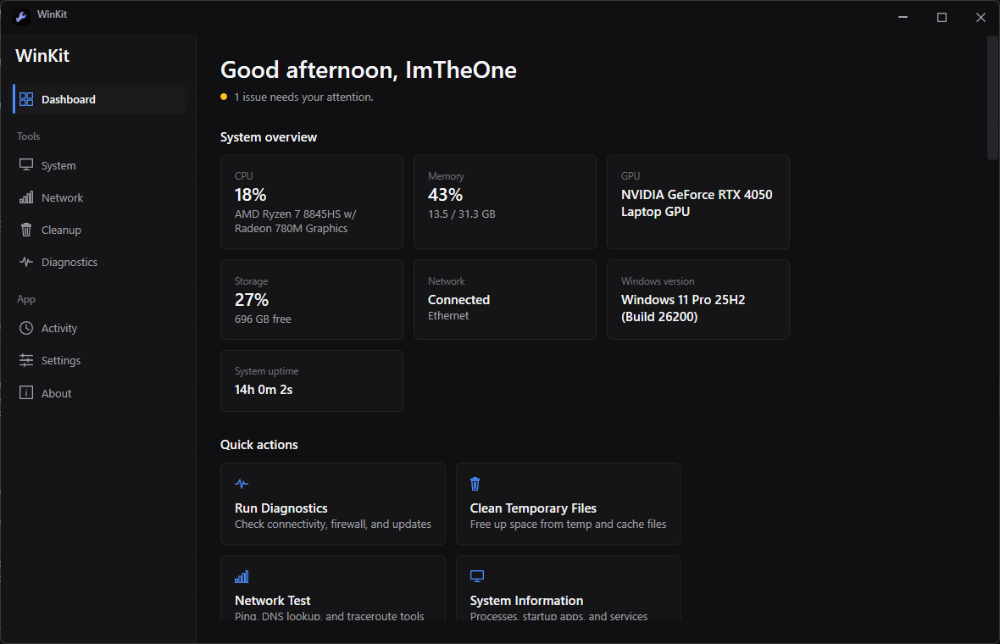

System information
CPU, memory, GPU, storage, network, Windows build and uptime in one overview — instead of Settings, Task Manager and winver.

Features
CPU, memory, GPU, storage, network, Windows build and uptime in one overview — instead of Settings, Task Manager and winver.
A one-click pass over connectivity, firewall and update health, reported in plain language rather than error codes.
A live process list with auto-refresh and freeze / unfreeze, plus service and startup entry management in the same window.
Ping, traceroute, DNS lookup and IP configuration, next to maintenance actions like flushing DNS and resetting adapters.
Scan temporary and cache locations, see what each category actually holds, and reclaim only the space you choose to.
Installed applications with clean uninstall, an environment variables editor and a hosts file editor — elevated only when a task needs it.
Four built-in themes with custom theme import, plus adjustable density, corner radius and font scale. Settings and activity stay on the machine under %LOCALAPPDATA%\WinKit — no account, no cloud sync, no telemetry.
Made with
C#·Windows API
Download
Unzip and run. Nothing is installed, nothing is registered.
Download .zip57 MB
Installs to Program Files with a Start Menu shortcut and an uninstaller.
Download .exe43 MB